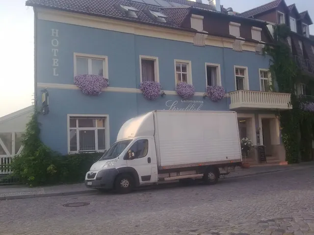
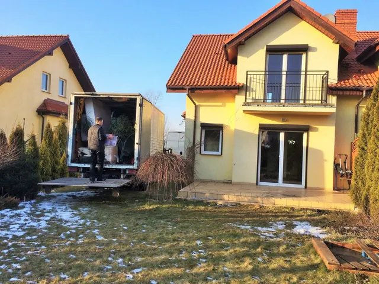

Bagażówka (bus)
Wyposażenie 1 pokoju, małej kawalerki albo 5 europalet.
od 90 zł / godz. w mieście
- Ładowność1,5 t
- W trasieod 1,60 zł/km
- Pomocnik50 zł/h
Strona główna / Cennik
W mieście płacisz za godzinę wynajmu auta, a kilometry w obrębie miasta i pomoc kierowcy przy załadunku są już w cenie. W trasie płacisz tylko za przejechany kilometr.
Wyposażenie 1 pokoju, małej kawalerki albo 5 europalet.
od 90 zł / godz. w mieście

Mieszkanie 2-3 pokojowe, duża kawalerka albo 8 europalet.
od 120 zł / godz. w mieście

Mieszkanie 4-6 pokojowe, mały dom, firma albo 15 europalet.
od 180 zł / godz. w mieście
Czas liczymy od podjazdu do całkowitego rozładunku, pomocników tylko przy załadunku i rozładunku, nie w czasie jazdy. Cenę przeprowadzki krajowej i zagranicznej ustalamy indywidualnie, możliwe są negocjacje.
dla nowych i stałych klientów z polecenia, na szybkie zlecenia w Poznaniu, w Polsce i za granicą.
przy łączeniu zleceń, gdy Twój ładunek pasuje do trasy, którą i tak jedziemy.
Średnie ceny przeprowadzki w jedną stronę na najczęstszych trasach.